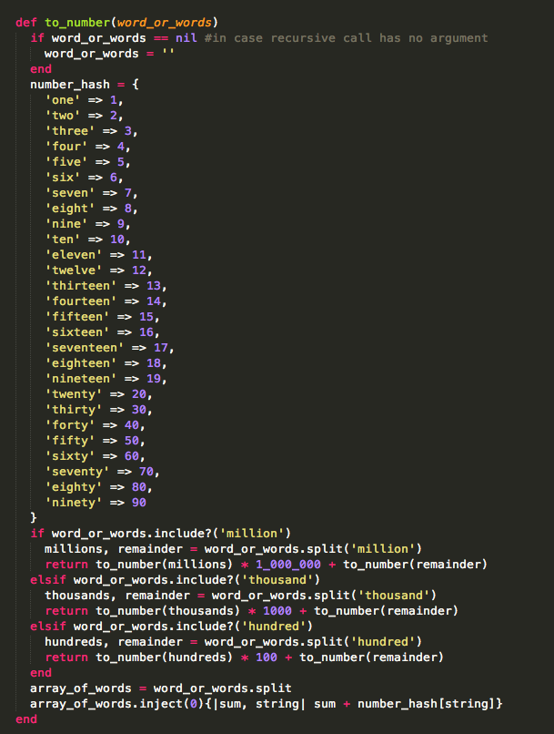
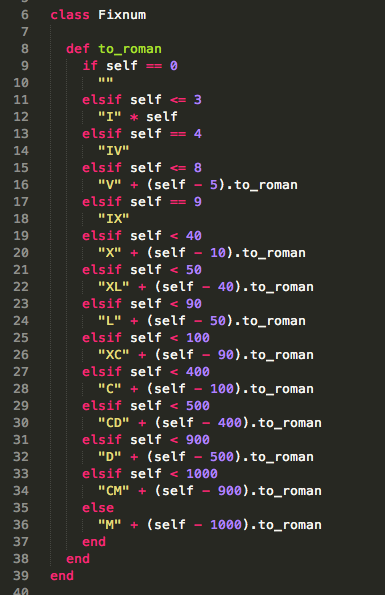

Projects
to_number
- Write a function that takes the English word for a number and turns into an actual number
- I struggled with it and typed out an entire hash with english word as key and integer as value - from “one” to “one hundred"
- We then worked as a class to develope the method to turn any english word into a number up through "millions"
- Below is the code we collectively created:
- 
to_roman
- Take any integer from 1 to 2015 and translate it to a roman numeral
- Brian started us off in the right direction and left it up to us to finish off the task
- This project created a "light blub" moment for me as I was able to step back from the code and look for a pattern to solve the problem.
- Here is the final product of what Brian gave us and what I was able to come up with:
- 
to_factorial: write a method on the Fixnum class which returns the factorial of a number to_english: convert a number to English (opposite of to_number) Blackjack: create working version of blackjack solely using Ruby Ruby Koans: learning ruby language, syntax, structure and some common functions and libraries through testing Wolfpack: presented with problem outlined in English and taking iterative steps in ruby to solve it Investment Club (moguls): similar to wolfpack Three Card Poker: card/deck/hand/poker classes high card, pair, flush, straight, three of a kind, straight flush ==> comparisons ante/play/pair plus bets integrated with html/css -> using .erb and card image files Codewars.com katas Middleman Build a site that describes everything you know about Ruby and web development to this point